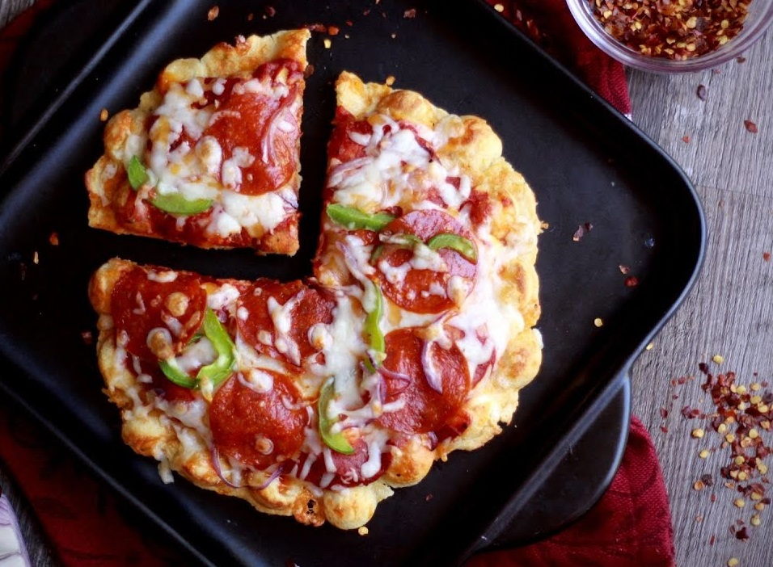

FUSION FOODS

The origin of waffle pizza is hard to pin down. Waffles can trace their history back to ancient Greece — cooks would toast flat cakes of bread between two hot metal plates to make a dish called obelios. Over the years, the concept of roasting dough between two plates evolved, eventually influencing the bread served during services in the Catholic church. These “wafers” gradually became wafels. The distinctive grid pattern appeared in 15th century Denmark, and by the early 18th century, wafels had become waffles. Pizza waffles are just the latest waffle iteration in a long history of innovation. You’re most likely to find them in America’s big cities, but their true success is in home kitchens across the country. Fast, simple and delicious, waffle pizzas are quickly becoming a go-to comfort food.
Click on the image to watch recipe video..!!
Step-1:Make a batch of my Everyday Pizza Dough.
Step-2:Divide the dough in 8 equal pieces.
Step-3:Preheat the waffle iron to medium high heat.
Step-4:Take 1 piece of dough and stretch it out to about 8" in diameter.
Step-5:Either spray the waffle iron with a little vegetable oil, or you can brush the surface of the dough with oil.
Step-6:Place the dough onto the waffle iron (oiled side down).
Step-7:Add tomato sauce, cheese, and toppings.
Step-8:Place the second dough (stretched to the same size) over the fillings.
Step-9:Close the waffle maker and let it cook for about 6-8 minutes, until golden brown and crisp.
Step-10:Remove the pizza waffle and let cool on a wire rack.